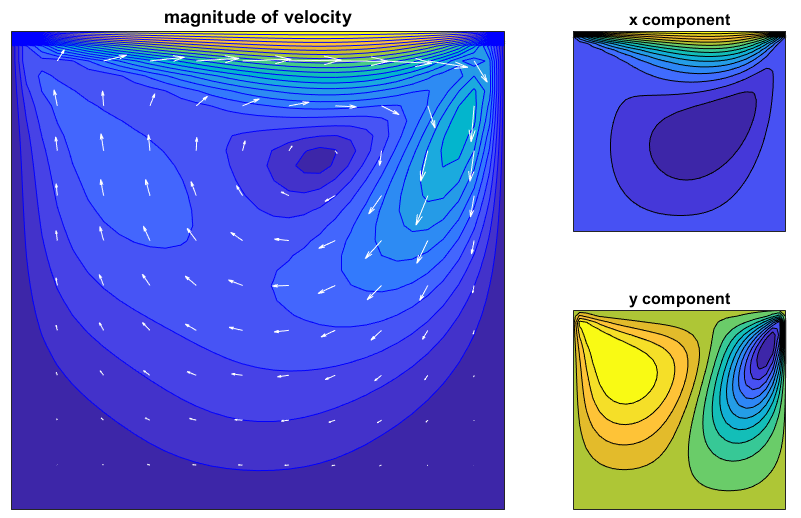

Navier Stokes - 2D Driven lid
The script file: example-NS.jl
A 2D Navier Stokes simulation of a driven lid problem. This demonstrates the nonlinear solver capability, multiple variables, and parameter entities.
Begin by importing and using the Finch module. Then initialize. The name here is only used when generating code files.
using Finch
init_finch("NS");Then set up the configuration. This example simply sets dimensionality of the domain and polynomial order of the basis function space.
domain(2) # dimension
functionSpace(order=4) # polynomial orderUse the built-in simple mesh generator to make the mesh and set up all node mappings.
mesh(QUADMESH, elsperdim=32, bids=4) # 32*32 elements, 4 separate boundary regionsDefine the variable, test function, coefficient, and parameter symbols.
u = variable("u") # velocity x component
v = variable("v") # velocity y component
uold = variable("uold") # used for manually defining time derivatives
vold = variable("vold") #
p = variable("p") # pressure
du = variable("du") #
dv = variable("dv") # These three are being solved for
dp = variable("dp") # and are used by Newton's method.
testSymbol("w")
coefficient("mu", 0.01)
coefficient("dtc", dt)
coefficient("h", 1.0 / 32)
coefficient("coe1", 4.0)
coefficient("coe2", 6.0)
parameter("tauM", "1.0 ./ (coe1 ./ dtc ./ dtc+ (u*u+v*v) ./ h ./ h+coe2*mu*mu ./ h ./ h ./ h ./ h) .^ 0.5")
parameter("tauC", "0.1*h*h* ((u*u+v*v) ./ h ./ h+coe2*mu*mu ./ h ./ h ./ h ./ h) .^ 0.5")Set up the time stepper and initial conditions. This example uses implicit Euler. Other explicit or implicit methods are available.
timeStepper(EULER_IMPLICIT)
dt = 0.05;
nsteps = 50;
setSteps(dt, nsteps) # use this to manually set the time steps
initial(u, "y > 0.99 ? 1 : 0")
initial(uold, "y > 0.99 ? 1 : 0")
initial(du, "0")
initial(v, "0")
initial(vold, "0")
initial(dv, "0")
initial(p, "0")
initial(dp, "0")Convert the PDE into the weak form
The boundary conditions are specified.
boundary(du, 1, DIRICHLET, 0)
boundary(du, 2, DIRICHLET, 0)
boundary(du, 3, DIRICHLET, 0)
boundary(du, 4, DIRICHLET, 0)
boundary(dv, 1, DIRICHLET, 0)
boundary(dv, 2, DIRICHLET, 0)
boundary(dv, 3, DIRICHLET, 0)
boundary(dv, 4, DIRICHLET, 0)
boundary(dp, 1, NO_BC) # No boundary condition applied
boundary(dp, 2, NO_BC)
boundary(dp, 3, NO_BC)
boundary(dp, 4, NO_BC)
referencePoint(dp, [0,0], 0) # Pins a single Dirichlet pointThen write the weak form expression in the residual form. Finally, solve for u.
weakForm([du, dv, dp],
["w*(du ./ dtc + (u*deriv(du,1)+v*deriv(du,2) + deriv(u,2)*dv)) - deriv(w,1)*dp + mu*dot(grad(w), grad(du)) + tauM*(u*deriv(w,1)+v*deriv(w,2))*(du ./ dtc + (u*deriv(du,1)+v*deriv(du,2)) + deriv(dp,1)) - (w*((u-uold) ./ dtc + (u*deriv(u,1)+v*deriv(u,2))) - deriv(w,1)*p + mu*dot(grad(w), grad(u)) + tauM*(u*deriv(w,1)+v*deriv(w,2))*((u-uold) ./ dtc + (u*deriv(u,1)+v*deriv(u,2)) + deriv(p,1)))",
"w*(dv ./ dtc + (u*deriv(dv,1)+v*deriv(dv,2) + deriv(v,1)*du)) - deriv(w,2)*dp + mu*dot(grad(w), grad(dv)) + tauM*(u*deriv(w,1)+v*deriv(w,2))*(dv ./ dtc + (u*deriv(dv,1)+v*deriv(dv,2)) + deriv(dp,2)) - (w*((v-vold) ./ dtc + (u*deriv(v,1)+v*deriv(v,2))) - deriv(w,2)*p + mu*dot(grad(w), grad(v)) + tauM*(u*deriv(w,1)+v*deriv(w,2))*((v-vold) ./ dtc + (u*deriv(v,1)+v*deriv(v,2)) + deriv(p,2)))",
"w*(deriv(du,1)+deriv(dv,2)) + tauC*(deriv(w,1)*( du ./ dtc + (u*deriv(du,1)+v*deriv(du,2)) + deriv(dp,1) ) + deriv(w,2)*( dv ./ dtc + (u*deriv(dv,1)+v*deriv(dv,2)) + deriv(dp,2) )) - (w*(deriv(u,1)+deriv(v,2)) + tauC*(deriv(w,1)*( (u-uold) ./ dtc + (u*deriv(u,1)+v*deriv(u,2)) + deriv(p,1) ) + deriv(w,2)*( (v-vold) ./ dtc + (u*deriv(v,1)+v*deriv(v,2)) + deriv(p,2) )))"])
solve([du, dv, dp], [u, v, p, uold, vold], nonlinear=true);End things with finalize_finch() to finish up any generated files and the log.